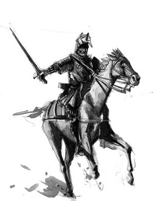

Путешествие в средневековье
 Вы любитель старины? Вам интересно узнать, как жили в давние времена, в эпоху каменных замков и рыцарей крестоносцев?
Вам интересна эпоха средневековья, вы хотите знать как выглядели настоящие доспехи средневекового рыцаря?
Или возможно вы интересуетесь, как раньше жили в средневековых городах?

Средние века в современной периодизации всемирной истории охватывают время от краха Западной Римской империи в 5 веке нашей эры до эпохи Великих географических открытий (рубеж 15-16 веков), причем полное господство именно средневековой культуры в Европе связывают не со всем периодом, а с 5-13 веками. Потом в Италии зарождается переходная культурная эпоха - Возрождение, которая охватывает конец средневековья, и начало Нового времени.
Оценка Средних веков в науке изменялась. Гуманисты эпохи Возрождения (которые как раз и ввели этот термин) и просветители 18 века (Дидро, Вольтер, Монтескье) называли их "темными веками", писали о глубоком упадке культуры. В противовес им романтики 19 столетия в научных и, особенно, в художественных произведениях идеализировали средневековье, были склонны видеть в нем обособление высшей морали. Современные ученые преимущественно избегают крайностей. Признается, что в сравнении с античностью оказались потеряны множество достижений культуры, но в то же время в сферу культурного развития были привлечены новые народности, родились национальные культуры.